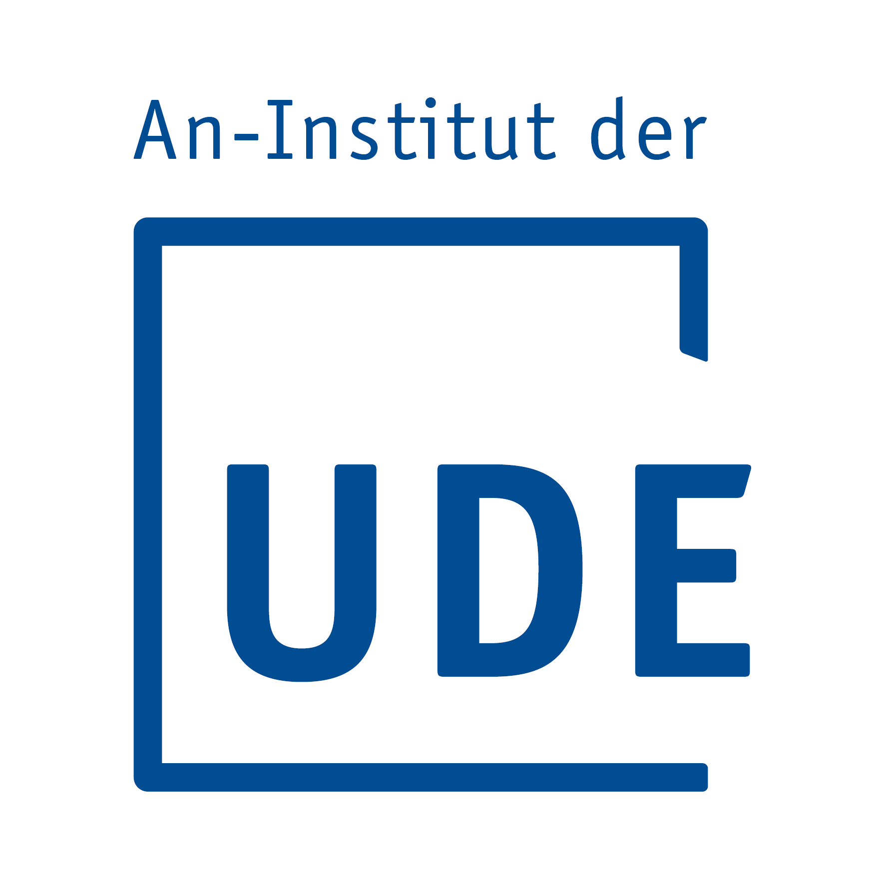
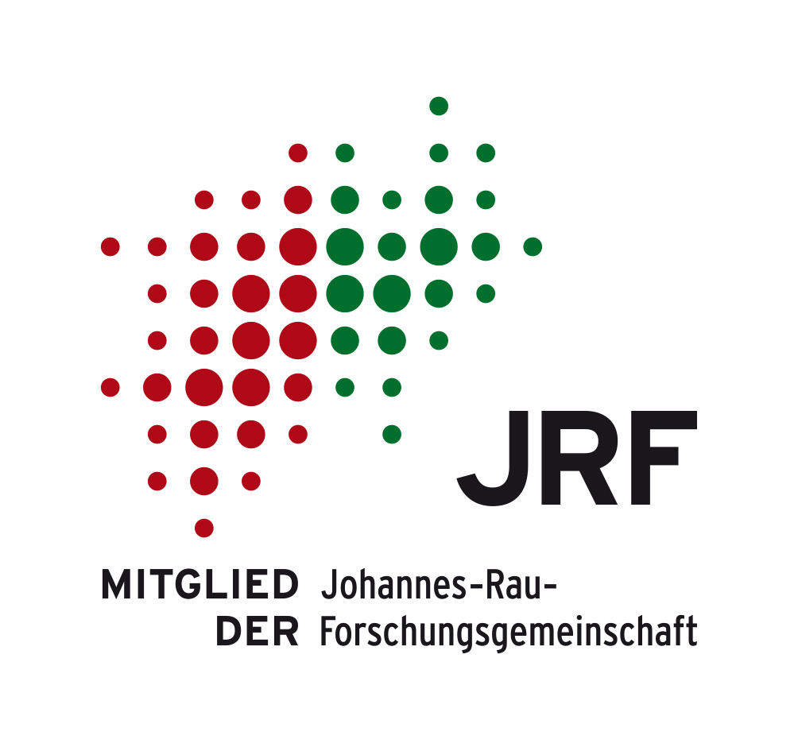
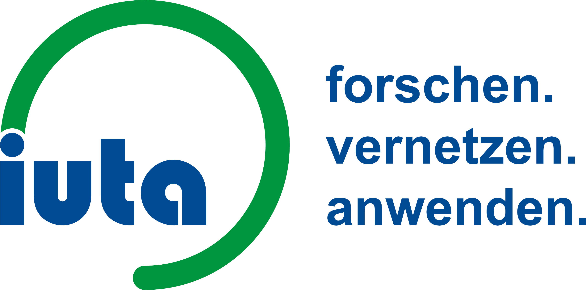
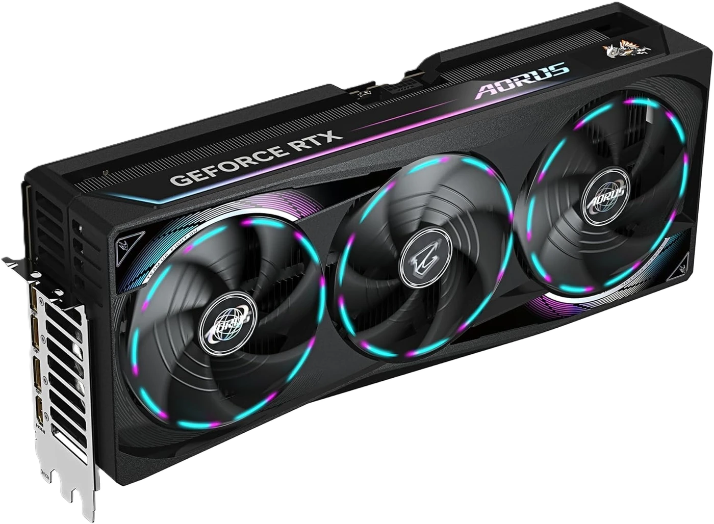
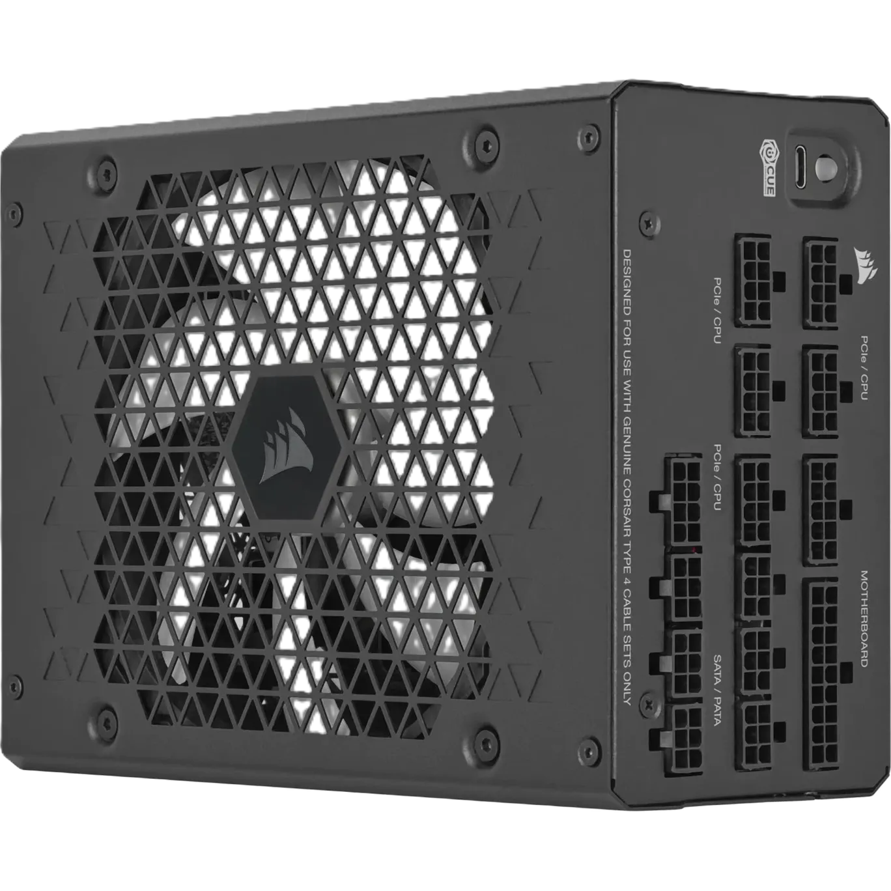

LLM = Large Language Model · It predicts the next likely token; it does not independently take actions.

Author: Andrej Karpathy, AI researcher and educator. Perspective: A technical, from-first-principles explanation of what happens inside an LLM, rather than a discussion of a particular agent platform. Content: The video covers tokenization, embeddings, neural-network layers, transformer inference, training, and next-token prediction, providing a deeper follow-up to the preceding LLM overview.
An AI agent is an autonomous system that uses an LLM to perceive, reason, and act within an environment.
| LLM | AI Agent |
|---|---|
| Stateless text completion | Stateful, goal-oriented |
| Single response | Multi-step reasoning |
| No tool access | Can use tools (search, code, APIs) |
| No memory of past turns | Maintains context & history |
| Passive | Proactive - plans & executes |
read_file tool.// 1. MCP server backend (pseudocode)
registerTool("read_file", { path: "string" }, async ({ path }) => {
const file = resolveAllowedPath(ALLOWED_ROOT, path);
if (!file) throw new Error("Path is outside the allowed root");
const text = await readTextFile(file);
return { content: [{ type: "text", text }] };
});// 2. Host configuration: start the server and scope its access
{
"mcpServers": {
"filesystem": {
"command": "npx",
"args": ["@modelcontextprotocol/server-filesystem", "./project"]
}
}
}// 3. MCP server advertises the tool
{ "name": "read_file", "inputSchema": { "path": "string" } }// 4. Agent host sends the tool call
{ "name": "read_file", "arguments": { "path": "./README.md" } }// 5. Result returned to the LLM
{ "content": "...file text..." }# Example: SKILL.md
name: rcpp-build
description: Build and update an R package with Rcpp C++ code
When changing Rcpp code:
1. Edit the C++ source files, not generated wrappers.
2. Run devtools::load_all() to compile and refresh exports.
3. Treat RcppExports.R as autogenerated; never edit it manually.
4. Run the package tests and report build errors.rcpp-build, edits the C++ source, runs devtools::load_all(), and leaves RcppExports.R to the generation workflow.# A plugin can provide a skill package
.opencode/plugins/project-dir/
plugin.json # plugin metadata and registration
skills/rcpp-build/
SKILL.md # reusable instructions and workflow
tools/validate.py # executable validation tool
templates/ # reusable output files
Author: Matt Pocock, presented through the AI Engineer channel. Perspective: A practical walkthrough of using AI coding tools as part of a real development workflow. Content: The video shows how an agent can work with project context, instructions, tools, code changes, and review steps, complementing the preceding explanation of skills and plugins.
Why go local?
Challenges:

→32 GB VRAMBefore: NVIDIA GeForce GTX 1650, 4 GB
After: NVIDIA GeForce RTX 5090, 32 GB, Gigabyte Aorus Master

→1200 WBefore: 1000 W power supply
After: Corsair HX Series HX1200i 2025, 1200 W, 80Plus Platinum
Ollama is the easiest way to run open-source LLMs locally.
| Feature | Details |
|---|---|
| Installation | One-click installer for macOS, Linux, Windows |
| Model support | Llama 3, Mistral, Qwen, Gemma, Phi, DeepSeek, and 100+ more |
| Quantization | Automatic - downloads GGUF quantized models |
| API | OpenAI-compatible REST API at localhost:11434 |
| GPU support | CUDA (NVIDIA), Vulkan (AMD/Intel), Metal (Apple) |
| Use case | Development, prototyping, single-user or small-team use |
# Pull and run a model
ollama pull deepseek-r1:8b
ollama run deepseek-r1:8b
# API call (OpenAI-compatible)
curl http://localhost:11434/v1/chat/completions \
-d '{"model":"deepseek-r1:8b","messages":[{"role":"user","content":"Hello"}]}'vLLM is a high-throughput inference engine optimized for production.
| Feature | Details |
|---|---|
| Installation | pip install vllm (Python package) |
| Model support | Hugging Face models (Llama, Mistral, Qwen, etc.) |
| Key innovation | PagedAttention - efficient KV cache management |
| Performance | 10-24x higher throughput than Hugging Face default |
| API | OpenAI-compatible server |
| GPU support | CUDA (NVIDIA only) |
| Use case | High-throughput production serving, multi-user |
# Start the server
vllm serve mistralai/Mistral-7B-Instruct-v0.3 \
--host 0.0.0.0 --port 8000
# API call
curl http://localhost:8000/v1/chat/completions \
-d '{"model":"mistralai/Mistral-7B-Instruct-v0.3","messages":[{"role":"user","content":"Hello"}]}'Windows ML Studio (part of Windows AI Studio / VS Code extension) simplifies running SLMs locally on Windows.
| Feature | Details |
|---|---|
| Installation | Via VS Code extension or Windows AI Dev Hub |
| Model support | Phi-3, Phi-3.5, Mistral, Llama (ONNX-optimized) |
| Hardware | Optimized for Windows DirectML (AMD, Intel, NVIDIA) |
| Integration | Tight VS Code integration |
| Use case | Windows-native development, no Linux/WSL needed |
| Criterion | Ollama | vLLM | ML Studio |
|---|---|---|---|
| Ease of setup | ★★★★★ | ★★★☆☆ | ★★★★☆ |
| Performance | ★★★☆☆ | ★★★★★ | ★★★☆☆ |
| GPU coverage | All major | NVIDIA only | Any DX12 GPU |
| Multi-user | Limited | Native | No |
| Quantization | Built-in (GGUF) | Via AWQ/GPTQ | ONNX quantized |
| Best for | Quick start, dev | Production, scale | Windows-native dev |
OpenCode is one possible orchestration layer for connecting a local model to an agent workflow.
What OpenCode adds around the model:
Orchestration loop:
User request → LLM (reasoning) → Tool calls → Results → LLM → Next action
↑ |
└────────── Loop until done ─────────────┘By default, Ollama binds to localhost:11434. To make it accessible on your internal network:
Step 1: Configure Ollama to listen on all interfaces
Linux/macOS (systemd):
# Edit the systemd service
sudo systemctl edit ollama.service
# Add these lines:
[Service]
Environment="OLLAMA_HOST=0.0.0.0:11434"
Environment="OLLAMA_ORIGINS=*"Windows:
# Set environment variables (System Properties → Environment Variables)
OLLAMA_HOST=0.0.0.0:11434
OLLAMA_ORIGINS=*
# Then restart Ollama from system trayStep 2: Configure firewall
# Windows (PowerShell as Admin)
New-NetFirewallRule -DisplayName "Ollama" -Direction Inbound `
-LocalPort 11434 -Protocol TCP -Action AllowAlternative: Use a reverse proxy with authentication
# Example using Nginx with basic auth
# This adds security and allows HTTPSStep 3: Configure OpenCode to use Ollama on another machine
{
"provider": {
"ollama-lan": {
"npm": "@ai-sdk/openai-compatible",
"name": "Ollama LAN",
"options": {
"baseURL": "http://10.93.0.226:11434/v1",
"timeout": 600000,
"chunkTimeout": 120000
},
"models": {
"qwen3.6:35b": {
"name": "Qwen 3.6 35B",
"limit": {
"context": 49152,
"output": 8192
}
}
}
},
"compaction": {
"auto": true,
"prune": true,
"reserved": 12000
}
}
}Step 4: Verify connectivity
# Test that the Ollama LAN API is reachable
curl http://10.93.0.226:11434/v1/chat/completions \
-d '{"model":"qwen3.6:35b","messages":[{"role":"user","content":"Hello"}]}'http://10.93.0.226:11434/v1Qwen3.6:35B model and explore what your private AI coding assistant can do.# Create the project
npm init -y
npm install @modelcontextprotocol/sdk zod
// server.mjs
import { McpServer } from "@modelcontextprotocol/sdk/server/mcp.js";
import { StdioServerTransport } from "@modelcontextprotocol/sdk/server/stdio.js";
import { readFile } from "node:fs/promises";
import { resolve, relative, isAbsolute, sep } from "node:path";
import { z } from "zod";
const ROOT = resolve(process.env.ALLOWED_ROOT ?? "./project");
const server = new McpServer({ name: "safe-filesystem", version: "1.0.0" });
server.registerTool("read_file", {
description: "Read a UTF-8 text file inside the allowed project folder",
inputSchema: { path: z.string().describe("Relative file path") }
}, async ({ path }) => {
const file = resolve(ROOT, path);
const rel = relative(ROOT, file);
const outside = rel === ".." || rel.startsWith(`..${sep}`) || isAbsolute(rel);
if (outside) throw new Error("Path is outside the allowed root");
const text = await readFile(file, "utf8");
return { content: [{ type: "text", text }] };
});
const transport = new StdioServerTransport();
await server.connect(transport);